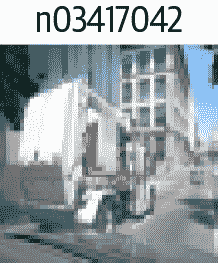
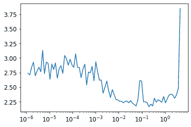
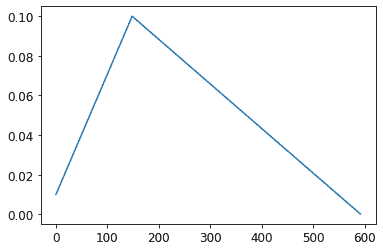

第十九章：从头开始创建一个 fastai 学习器
这最后一章（除了结论和在线章节）将会有所不同。它包含的代码比以前的章节要多得多，而叙述要少得多。我们将介绍新的 Python 关键字和库，而不进行讨论。这一章的目的是为您开展一项重要的研究项目。您将看到，我们将从头开始实现 fastai 和 PyTorch API 的许多关键部分，仅建立在我们在第十七章中开发的组件上！这里的关键目标是最终拥有自己的Learner类和一些回调函数，足以训练一个模型在 Imagenette 上，包括我们学习的每个关键技术的示例。在构建Learner的过程中，我们将创建我们自己的Module、Parameter和并行DataLoader的版本，这样您就会对 PyTorch 类的功能有一个很好的了解。
本章末尾的问卷调查对于本章非常重要。这是我们将指导您探索许多有趣方向的地方，使用本章作为起点。我们建议您在计算机上跟着本章进行学习，并进行大量的实验、网络搜索和其他必要的工作，以了解发生了什么。在本书的其余部分，您已经积累了足够的技能和专业知识来做到这一点，所以我们相信您会做得很好！
让我们开始手动收集一些数据。
数据
查看untar_data的源代码，看看它是如何工作的。我们将在这里使用它来访问 Imagene 的 160 像素版本，以在本章中使用：
path = untar_data(URLs.IMAGENETTE_160)要访问图像文件，我们可以使用get_image_files：
t = get_image_files(path)
t[0]Path('/home/jhoward/.fastai/data/imagenette2-160/val/n03417042/n03417042_3752.JP
> EG')或者我们可以使用 Python 的标准库glob来做同样的事情：
from glob import glob
files = L(glob(f'{path}/**/*.JPEG', recursive=True)).map(Path)
files[0]Path('/home/jhoward/.fastai/data/imagenette2-160/val/n03417042/n03417042_3752.JP
> EG')如果您查看get_image_files的源代码，您会发现它使用了 Python 的os.walk；这是一个比glob更快、更灵活的函数，所以一定要尝试一下。
我们可以使用 Python Imaging Library 的Image类打开一张图片：
im = Image.open(files[0])
imim_t = tensor(im)
im_t.shapetorch.Size([160, 213, 3])这将成为我们独立变量的基础。对于我们的因变量，我们可以使用pathlib中的Path.parent。首先，我们需要我们的词汇表
lbls = files.map(Self.parent.name()).unique(); lbls(#10) ['n03417042','n03445777','n03888257','n03394916','n02979186','n03000684','
> n03425413','n01440764','n03028079','n02102040']以及反向映射，感谢L.val2idx：
v2i = lbls.val2idx(); v2i{'n03417042': 0,
'n03445777': 1,
'n03888257': 2,
'n03394916': 3,
'n02979186': 4,
'n03000684': 5,
'n03425413': 6,
'n01440764': 7,
'n03028079': 8,
'n02102040': 9}这就是我们需要组合成Dataset的所有部分。
数据集
在 PyTorch 中，Dataset可以是任何支持索引（__getitem__）和len的东西：
class Dataset:
def __init__(self, fns): self.fns=fns
def __len__(self): return len(self.fns)
def __getitem__(self, i):
im = Image.open(self.fns[i]).resize((64,64)).convert('RGB')
y = v2i[self.fns[i].parent.name]
return tensor(im).float()/255, tensor(y)我们需要一个训练和验证文件名列表传递给Dataset.__init__：
train_filt = L(o.parent.parent.name=='train' for o in files)
train,valid = files[train_filt],files[~train_filt]
len(train),len(valid)(9469, 3925)现在我们可以尝试一下：
train_ds,valid_ds = Dataset(train),Dataset(valid)
x,y = train_ds[0]
x.shape,y(torch.Size([64, 64, 3]), tensor(0))show_image(x, title=lbls[y]);
正如您所看到的，我们的数据集返回独立变量和因变量作为元组，这正是我们需要的。我们需要将这些整合成一个小批量。通常，可以使用torch.stack来完成这个任务，这就是我们将在这里使用的方法：
def collate(idxs, ds):
xb,yb = zip(*[ds[i] for i in idxs])
return torch.stack(xb),torch.stack(yb)这是一个包含两个项目的小批量，用于测试我们的collate：
x,y = collate([1,2], train_ds)
x.shape,y(torch.Size([2, 64, 64, 3]), tensor([0, 0]))现在我们有了数据集和一个整合函数，我们准备创建DataLoader。我们将在这里添加两个东西：一个可选的shuffle用于训练集，以及一个ProcessPoolExecutor来并行进行预处理。并行数据加载器非常重要，因为打开和解码 JPEG 图像是一个缓慢的过程。一个 CPU 核心不足以快速解码图像以使现代 GPU 保持繁忙。这是我们的DataLoader类：
class DataLoader:
def __init__(self, ds, bs=128, shuffle=False, n_workers=1):
self.ds,self.bs,self.shuffle,self.n_workers = ds,bs,shuffle,n_workers
def __len__(self): return (len(self.ds)-1)//self.bs+1
def __iter__(self):
idxs = L.range(self.ds)
if self.shuffle: idxs = idxs.shuffle()
chunks = [idxs[n:n+self.bs] for n in range(0, len(self.ds), self.bs)]
with ProcessPoolExecutor(self.n_workers) as ex:
yield from ex.map(collate, chunks, ds=self.ds)让我们尝试一下我们的训练和验证数据集：
n_workers = min(16, defaults.cpus)
train_dl = DataLoader(train_ds, bs=128, shuffle=True, n_workers=n_workers)
valid_dl = DataLoader(valid_ds, bs=256, shuffle=False, n_workers=n_workers)
xb,yb = first(train_dl)
xb.shape,yb.shape,len(train_dl)(torch.Size([128, 64, 64, 3]), torch.Size([128]), 74)这个数据加载器的速度不比 PyTorch 的慢，但它要简单得多。因此，如果您正在调试一个复杂的数据加载过程，不要害怕尝试手动操作，以帮助您准确地了解发生了什么。
对于归一化，我们需要图像统计数据。通常，可以在一个训练小批量上计算这些数据，因为这里不需要精度：
stats = [xb.mean((0,1,2)),xb.std((0,1,2))]
stats[tensor([0.4544, 0.4453, 0.4141]), tensor([0.2812, 0.2766, 0.2981])]我们的Normalize类只需要存储这些统计数据并应用它们（要查看为什么需要to_device，请尝试将其注释掉，然后查看后面的笔记本中会发生什么）：
class Normalize:
def __init__(self, stats): self.stats=stats
def __call__(self, x):
if x.device != self.stats[0].device:
self.stats = to_device(self.stats, x.device)
return (x-self.stats[0])/self.stats[1]我们总是喜欢在笔记本中测试我们构建的一切，一旦我们构建它：
norm = Normalize(stats)
def tfm_x(x): return norm(x).permute((0,3,1,2))t = tfm_x(x)
t.mean((0,2,3)),t.std((0,2,3))(tensor([0.3732, 0.4907, 0.5633]), tensor([1.0212, 1.0311, 1.0131]))这里tfm_x不仅仅应用Normalize，还将轴顺序从NHWC排列为NCHW（如果你需要提醒这些首字母缩写指的是什么，请参阅第十三章）。PIL 使用HWC轴顺序，我们不能在 PyTorch 中使用，因此需要这个permute。
这就是我们模型的数据所需的全部内容。现在我们需要模型本身！
Module 和 Parameter
要创建一个模型，我们需要Module。要创建Module，我们需要Parameter，所以让我们从那里开始。回想一下，在第八章中我们说Parameter类“没有添加任何功能（除了自动调用requires_grad_）。它只用作一个‘标记’，以显示要包含在parameters中的内容。”这里有一个确切的定义：
class Parameter(Tensor):
def __new__(self, x): return Tensor._make_subclass(Parameter, x, True)
def __init__(self, *args, **kwargs): self.requires_grad_()这里的实现有点尴尬：我们必须定义特殊的__new__ Python 方法，并使用内部的 PyTorch 方法_make_subclass，因为在撰写本文时，PyTorch 否则无法正确处理这种子类化或提供官方支持的 API 来执行此操作。也许在你阅读本文时，这个问题已经得到解决，所以请查看本书网站以获取更新的详细信息。
我们的Parameter现在表现得就像一个张量，正如我们所希望的：
Parameter(tensor(3.))tensor(3., requires_grad=True)现在我们有了这个，我们可以定义Module：
class Module:
def __init__(self):
self.hook,self.params,self.children,self._training = None,[],[],False
def register_parameters(self, *ps): self.params += ps
def register_modules (self, *ms): self.children += ms
@property
def training(self): return self._training
@training.setter
def training(self,v):
self._training = v
for m in self.children: m.training=v
def parameters(self):
return self.params + sum([m.parameters() for m in self.children], [])
def __setattr__(self,k,v):
super().__setattr__(k,v)
if isinstance(v,Parameter): self.register_parameters(v)
if isinstance(v,Module): self.register_modules(v)
def __call__(self, *args, **kwargs):
res = self.forward(*args, **kwargs)
if self.hook is not None: self.hook(res, args)
return res
def cuda(self):
for p in self.parameters(): p.data = p.data.cuda()关键功能在parameters的定义中：
self.params + sum([m.parameters() for m in self.children], [])这意味着我们可以询问任何Module的参数，并且它将返回它们，包括所有子模块（递归地）。但是它是如何知道它的参数是什么的呢？这要归功于实现 Python 的特殊__setattr__方法，每当 Python 在类上设置属性时，它就会为我们调用。我们的实现包括这一行：
if isinstance(v,Parameter): self.register_parameters(v)正如你所看到的，这是我们将新的Parameter类用作“标记”的地方——任何属于这个类的东西都会被添加到我们的params中。
Python 的__call__允许我们定义当我们的对象被视为函数时会发生什么；我们只需调用forward（这里不存在，所以子类需要添加）。在我们这样做之前，如果定义了钩子，我们将调用一个钩子。现在你可以看到 PyTorch 的钩子并没有做任何花哨的事情——它们只是调用任何已注册的钩子。
除了这些功能之外，我们的Module还提供了cuda和training属性，我们很快会用到。
现在我们可以创建我们的第一个Module，即ConvLayer：
class ConvLayer(Module):
def __init__(self, ni, nf, stride=1, bias=True, act=True):
super().__init__()
self.w = Parameter(torch.zeros(nf,ni,3,3))
self.b = Parameter(torch.zeros(nf)) if bias else None
self.act,self.stride = act,stride
init = nn.init.kaiming_normal_ if act else nn.init.xavier_normal_
init(self.w)
def forward(self, x):
x = F.conv2d(x, self.w, self.b, stride=self.stride, padding=1)
if self.act: x = F.relu(x)
return x我们不是从头开始实现F.conv2d，因为你应该已经在第十七章的问卷中使用unfold完成了这个任务。相反，我们只是创建了一个小类，将它与偏置和权重初始化一起包装起来。让我们检查它是否与Module.parameters正确工作：
l = ConvLayer(3, 4)
len(l.parameters())2并且我们可以调用它（这将导致forward被调用）：
xbt = tfm_x(xb)
r = l(xbt)
r.shapetorch.Size([128, 4, 64, 64])同样，我们可以实现Linear：
class Linear(Module):
def __init__(self, ni, nf):
super().__init__()
self.w = Parameter(torch.zeros(nf,ni))
self.b = Parameter(torch.zeros(nf))
nn.init.xavier_normal_(self.w)
def forward(self, x): return x@self.w.t() + self.b测试一下是否有效：
l = Linear(4,2)
r = l(torch.ones(3,4))
r.shapetorch.Size([3, 2])让我们也创建一个测试模块来检查，如果我们将多个参数作为属性包含，它们是否都被正确注册：
class T(Module):
def __init__(self):
super().__init__()
self.c,self.l = ConvLayer(3,4),Linear(4,2)由于我们有一个卷积层和一个线性层，每个层都有权重和偏置，我们期望总共有四个参数：
t = T()
len(t.parameters())4我们还应该发现，在这个类上调用cuda会将所有这些参数放在 GPU 上：
t.cuda()
t.l.w.devicedevice(type='cuda', index=5)现在我们可以使用这些部分来创建一个 CNN。
简单的 CNN
正如我们所见，Sequential类使许多架构更容易实现，所以让我们创建一个：
class Sequential(Module):
def __init__(self, *layers):
super().__init__()
self.layers = layers
self.register_modules(*layers)
def forward(self, x):
for l in self.layers: x = l(x)
return x这里的forward方法只是依次调用每个层。请注意，我们必须使用我们在Module中定义的register_modules方法，否则layers的内容不会出现在parameters中。
所有的代码都在这里
请记住，我们在这里没有使用任何 PyTorch 模块的功能；我们正在自己定义一切。所以如果你不确定register_modules做什么，或者为什么需要它，再看看我们为Module编写的代码！
我们可以创建一个简化的AdaptivePool，它只处理到 1×1 输出的池化，并且也将其展平，只需使用mean：
class AdaptivePool(Module):
def forward(self, x): return x.mean((2,3))这就足够我们创建一个 CNN 了！
def simple_cnn():
return Sequential(
ConvLayer(3 ,16 ,stride=2), #32
ConvLayer(16,32 ,stride=2), #16
ConvLayer(32,64 ,stride=2), # 8
ConvLayer(64,128,stride=2), # 4
AdaptivePool(),
Linear(128, 10)
)让我们看看我们的参数是否都被正确注册了：
m = simple_cnn()
len(m.parameters())10现在我们可以尝试添加一个钩子。请注意，我们在Module中只留了一个钩子的空间；您可以将其变成列表，或者使用类似Pipeline的东西将几个钩子作为单个函数运行：
def print_stats(outp, inp): print (outp.mean().item(),outp.std().item())
for i in range(4): m.layers[i].hook = print_stats
r = m(xbt)
r.shape0.5239089727401733 0.8776043057441711
0.43470510840415955 0.8347987532615662
0.4357188045978546 0.7621666193008423
0.46562111377716064 0.7416611313819885
torch.Size([128, 10])我们有数据和模型。现在我们需要一个损失函数。
损失
我们已经看到如何定义“负对数似然”：
def nll(input, target): return -input[range(target.shape[0]), target].mean()实际上，这里没有对数，因为我们使用与 PyTorch 相同的定义。这意味着我们需要将对数与 softmax 放在一起：
def log_softmax(x): return (x.exp()/(x.exp().sum(-1,keepdim=True))).log()
sm = log_softmax(r); sm[0][0]tensor(-1.2790, grad_fn=<SelectBackward>)将这些结合起来就得到了我们的交叉熵损失：
loss = nll(sm, yb)
losstensor(2.5666, grad_fn=<NegBackward>)请注意公式
在计算对数 softmax 时，这给出了一个简化，之前定义为(x.exp()/(x.exp().sum(-1))).log()：
def log_softmax(x): return x - x.exp().sum(-1,keepdim=True).log()
sm = log_softmax(r); sm[0][0]tensor(-1.2790, grad_fn=<SelectBackward>)然后，有一种更稳定的计算指数和的对数的方法，称为LogSumExp技巧。这个想法是使用以下公式
其中a是的最大值。
以下是相同的代码：
x = torch.rand(5)
a = x.max()
x.exp().sum().log() == a + (x-a).exp().sum().log()tensor(True)我们将其放入一个函数中
def logsumexp(x):
m = x.max(-1)[0]
return m + (x-m[:,None]).exp().sum(-1).log()
logsumexp(r)[0]tensor(3.9784, grad_fn=<SelectBackward>)因此我们可以将其用于我们的log_softmax函数：
def log_softmax(x): return x - x.logsumexp(-1,keepdim=True)这与之前得到的结果相同：
sm = log_softmax(r); sm[0][0]tensor(-1.2790, grad_fn=<SelectBackward>)我们可以使用这些来创建交叉熵：
def cross_entropy(preds, yb): return nll(log_softmax(preds), yb).mean()现在让我们将所有这些部分组合起来创建一个学习者。
学习者
我们有数据、模型和损失函数；在我们可以拟合模型之前，我们只需要另一件事，那就是优化器！这里是 SGD：
class SGD:
def __init__(self, params, lr, wd=0.): store_attr(self, 'params,lr,wd')
def step(self):
for p in self.params:
p.data -= (p.grad.data + p.data*self.wd) * self.lr
p.grad.data.zero_()正如我们在本书中所看到的，有了学习者生活就变得更容易了。学习者需要知道我们的训练和验证集，这意味着我们需要DataLoaders来存储它们。我们不需要任何其他功能，只需要一个地方来存储它们并访问它们：
class DataLoaders:
def __init__(self, *dls): self.train,self.valid = dls
dls = DataLoaders(train_dl,valid_dl)现在我们准备创建我们的学习者类：
class Learner:
def __init__(self, model, dls, loss_func, lr, cbs, opt_func=SGD):
store_attr(self, 'model,dls,loss_func,lr,cbs,opt_func')
for cb in cbs: cb.learner = self def one_batch(self):
self('before_batch')
xb,yb = self.batch
self.preds = self.model(xb)
self.loss = self.loss_func(self.preds, yb)
if self.model.training:
self.loss.backward()
self.opt.step()
self('after_batch')
def one_epoch(self, train):
self.model.training = train
self('before_epoch')
dl = self.dls.train if train else self.dls.valid
for self.num,self.batch in enumerate(progress_bar(dl, leave=False)):
self.one_batch()
self('after_epoch')
def fit(self, n_epochs):
self('before_fit')
self.opt = self.opt_func(self.model.parameters(), self.lr)
self.n_epochs = n_epochs
try:
for self.epoch in range(n_epochs):
self.one_epoch(True)
self.one_epoch(False)
except CancelFitException: pass
self('after_fit')
def __call__(self,name):
for cb in self.cbs: getattr(cb,name,noop)()这是我们在本书中创建的最大的类，但每个方法都非常小，所以通过依次查看每个方法，您应该能够理解发生了什么。
我们将调用的主要方法是fit。这个循环
for self.epoch in range(n_epochs)并在每个 epoch 中分别调用self.one_epoch，然后train=True，然后train=False。然后self.one_epoch对dls.train或dls.valid中的每个批次调用self.one_batch，适当地（在将DataLoader包装在fastprogress.progress_bar之后）。最后，self.one_batch遵循我们在本书中看到的适合一个小批量的一系列步骤。
在每个步骤之前和之后，Learner调用self，self调用__call__（这是标准的 Python 功能）。__call__在self.cbs中的每个回调上使用getattr(cb,name)，这是 Python 的内置函数，返回具有请求名称的属性（在本例中是一个方法）。因此，例如，self('before_fit')将为每个定义了该方法的回调调用cb.before_fit()。
正如您所看到的，Learner实际上只是使用了我们的标准训练循环，只是在适当的时候还调用了回调。所以让我们定义一些回调！
回调
在Learner.__init__中，我们有
for cb in cbs: cb.learner = self换句话说，每个回调都知道它是在哪个学习器中使用的。这是至关重要的，否则回调无法从学习器中获取信息，或者更改学习器中的内容。因为从学习器中获取信息是如此常见，我们通过将Callback定义为GetAttr的子类，并将默认属性定义为learner，使其更容易：
class Callback(GetAttr): _default='learner'GetAttr是一个 fastai 类，为您实现了 Python 的标准__getattr__和__dir__方法，因此每当您尝试访问一个不存在的属性时，它会将请求传递给您定义为_default的内容。
例如，我们希望在fit开始时自动将所有模型参数移动到 GPU。我们可以通过将before_fit定义为self.learner.model.cuda来实现这一点；然而，由于learner是默认属性，并且我们让SetupLearnerCB继承自Callback（它继承自GetAttr），我们可以去掉.learner，只需调用self.model.cuda：
class SetupLearnerCB(Callback):
def before_batch(self):
xb,yb = to_device(self.batch)
self.learner.batch = tfm_x(xb),yb
def before_fit(self): self.model.cuda()在SetupLearnerCB中，我们还通过调用to_device(self.batch)将每个小批量移动到 GPU（我们也可以使用更长的to_device(self.learner.batch)）。然而，请注意，在self.learner.batch = tfm_x(xb),yb这一行中，我们不能去掉.learner，因为这里我们是设置属性，而不是获取它。
在尝试我们的Learner之前，让我们创建一个回调来跟踪和打印进度。否则，我们将无法真正知道它是否正常工作：
class TrackResults(Callback):
def before_epoch(self): self.accs,self.losses,self.ns = [],[],[]
def after_epoch(self):
n = sum(self.ns)
print(self.epoch, self.model.training,
sum(self.losses).item()/n, sum(self.accs).item()/n)
def after_batch(self):
xb,yb = self.batch
acc = (self.preds.argmax(dim=1)==yb).float().sum()
self.accs.append(acc)
n = len(xb)
self.losses.append(self.loss*n)
self.ns.append(n)现在我们准备好第一次使用我们的Learner了！
cbs = [SetupLearnerCB(),TrackResults()]
learn = Learner(simple_cnn(), dls, cross_entropy, lr=0.1, cbs=cbs)
learn.fit(1)0 True 2.1275552130636814 0.2314922378287042
0 False 1.9942575636942674 0.2991082802547771惊人的是，我们可以用如此少的代码实现 fastai 的Learner中的所有关键思想！现在让我们添加一些学习率调度。
调度学习率
如果我们想要获得良好的结果，我们将需要一个 LR finder 和 1cycle 训练。这两个都是退火回调，也就是说，它们在训练过程中逐渐改变超参数。这是LRFinder：
class LRFinder(Callback):
def before_fit(self):
self.losses,self.lrs = [],[]
self.learner.lr = 1e-6
def before_batch(self):
if not self.model.training: return
self.opt.lr *= 1.2
def after_batch(self):
if not self.model.training: return
if self.opt.lr>10 or torch.isnan(self.loss): raise CancelFitException
self.losses.append(self.loss.item())
self.lrs.append(self.opt.lr)这展示了我们如何使用CancelFitException，它本身是一个空类，仅用于表示异常的类型。您可以在Learner中看到这个异常被捕获。（您应该自己添加和测试CancelBatchException，CancelEpochException等。）让我们尝试一下，将其添加到我们的回调列表中：
lrfind = LRFinder()
learn = Learner(simple_cnn(), dls, cross_entropy, lr=0.1, cbs=cbs+[lrfind])
learn.fit(2)0 True 2.6336045582954903 0.11014890695955222
0 False 2.230653363853503 0.18318471337579617并查看结果：
plt.plot(lrfind.lrs[:-2],lrfind.losses[:-2])
plt.xscale('log')
现在我们可以定义我们的OneCycle训练回调：
class OneCycle(Callback):
def __init__(self, base_lr): self.base_lr = base_lr
def before_fit(self): self.lrs = []
def before_batch(self):
if not self.model.training: return
n = len(self.dls.train)
bn = self.epoch*n + self.num
mn = self.n_epochs*n
pct = bn/mn
pct_start,div_start = 0.25,10
if pct<pct_start:
pct /= pct_start
lr = (1-pct)*self.base_lr/div_start + pct*self.base_lr
else:
pct = (pct-pct_start)/(1-pct_start)
lr = (1-pct)*self.base_lr
self.opt.lr = lr
self.lrs.append(lr)我们将尝试一个 LR 为 0.1：
onecyc = OneCycle(0.1)
learn = Learner(simple_cnn(), dls, cross_entropy, lr=0.1, cbs=cbs+[onecyc])让我们适应一段时间，看看它的样子（我们不会在书中展示所有输出——在笔记本中尝试以查看结果）：
learn.fit(8)最后，我们将检查学习率是否遵循我们定义的调度（如您所见，我们这里没有使用余弦退火）：
plt.plot(onecyc.lrs);
结论
我们已经通过在本章中重新实现它们来探索 fastai 库的关键概念。由于这本书大部分内容都是代码，您应该尝试通过查看书籍网站上相应的笔记本来进行实验。现在您已经了解了它是如何构建的，作为下一步，请务必查看 fastai 文档中的中级和高级教程，以了解如何自定义库的每一个部分。
问卷调查
实验
对于这里要求您解释函数或类是什么的问题，您还应该完成自己的代码实验。
什么是
glob？如何使用 Python 图像处理库打开图像？
L.map是做什么的？Self是做什么的？什么是
L.val2idx？您需要实现哪些方法来创建自己的
Dataset？当我们从 Imagenette 打开图像时为什么要调用
convert？~是做什么的？它如何用于拆分训练和验证集？~是否适用于L或Tensor类？NumPy 数组、Python 列表或 Pandas DataFrames 呢？什么是
ProcessPoolExecutor？L.range(self.ds)是如何工作的？__iter__是什么？什么是
first？permute是什么？为什么需要它？什么是递归函数？它如何帮助我们定义
parameters方法？编写一个递归函数，返回斐波那契数列的前 20 个项目。
什么是
super？为什么
Module的子类需要重写forward而不是定义__call__？在
ConvLayer中，为什么init取决于act？为什么
Sequential需要调用register_modules？编写一个打印每个层激活形状的钩子。
什么是 LogSumExp？
为什么
log_softmax有用？什么是
GetAttr？它如何帮助回调？重新实现本章中的一个回调，而不继承自
Callback或GetAttr。Learner.__call__是做什么的？什么是
getattr？（注意与GetAttr的大小写区别！）在
fit中为什么有一个try块？为什么在
one_batch中检查model.training？什么是
store_attr？TrackResults.before_epoch的目的是什么？model.cuda是做什么的？它是如何工作的？为什么我们需要在
LRFinder和OneCycle中检查model.training？在
OneCycle中使用余弦退火。
进一步研究
从头开始编写
resnet18（如有需要，请参考第十四章），并在本章中使用Learner进行训练。从头开始实现一个批归一化层，并在您的
resnet18中使用它。为本章编写一个 Mixup 回调。
向 SGD 添加动量。
从 fastai（或任何其他库）中挑选几个您感兴趣的特性，并使用本章中创建的对象实现它们。
选择一篇尚未在 fastai 或 PyTorch 中实现的研究论文，并使用本章中创建的对象进行实现。然后：
将论文移植到 fastai。
向 fastai 提交拉取请求，或创建自己的扩展模块并发布。
提示：您可能会发现使用
nbdev来创建和部署您的软件包很有帮助。